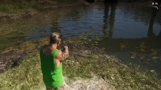

Open GTA 6 Map / Leonida / Meteorites
Meteorite Fragment: Mount Kalaga #10
Meteorite in Leonida

In the corner of the lake.
Open on the map- Category
- Meteorites
- District
- Leonida
- Game coordinates
- X -3,003, Y 6,820
Nearby
- Bridge Building
- Dawson Dam Building
- Meteorite Fragment Meteorite
- Rusty Willis Jr. Hunting Supplies Ammu-Nation
- Right Wing: America's Hero card: Right Wing (White) Right Wing card